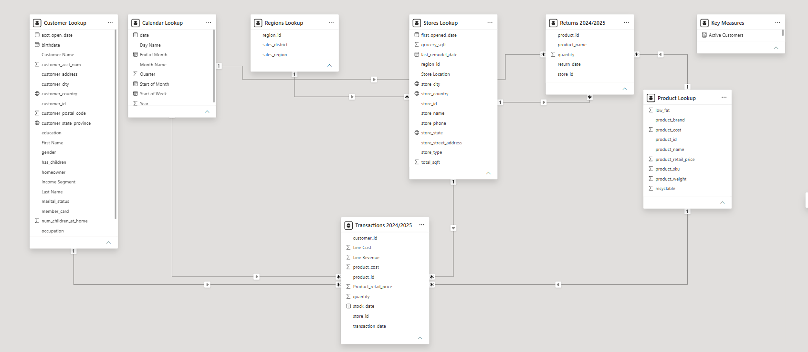
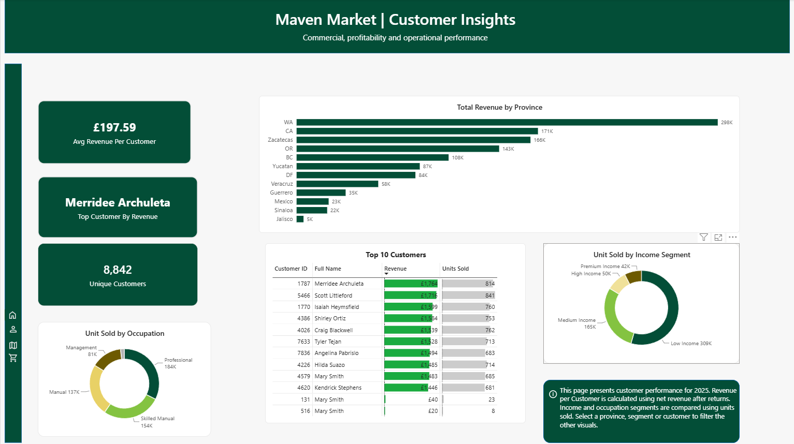
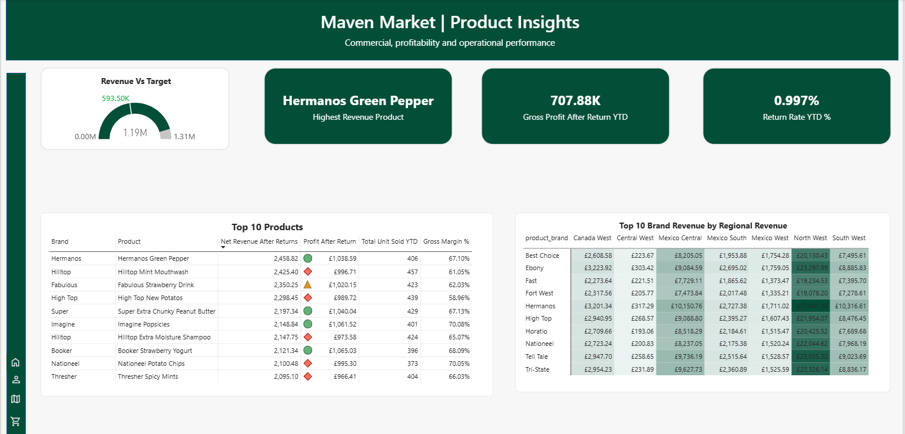
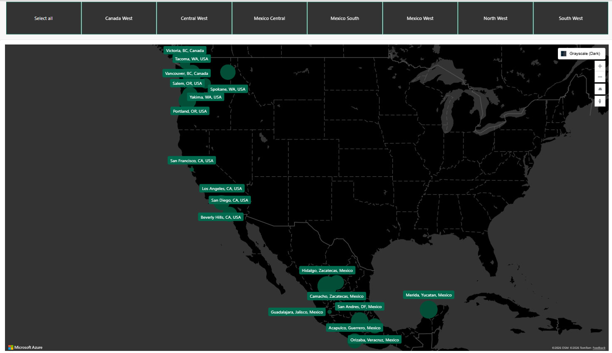
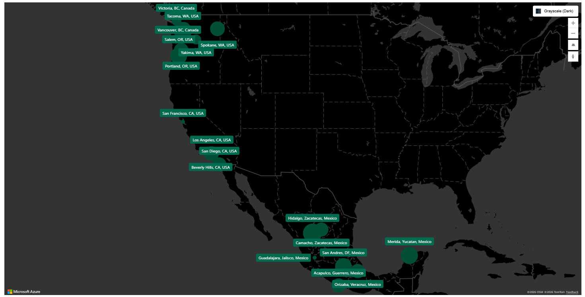
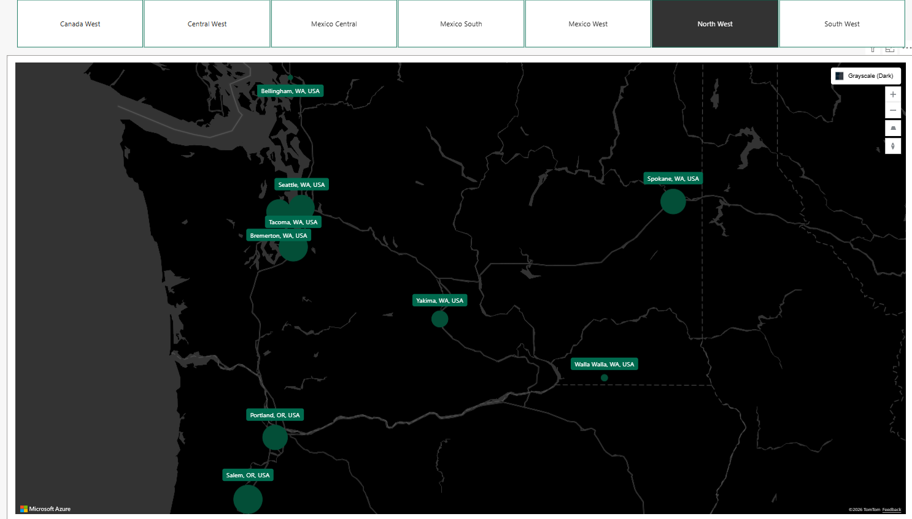

Fragmented Performance Measures
Revenue, units sold, returns, costs and customer information existed within the source data, but the measures required for management reporting were not available as a structured KPI framework.
Maven Market operates across multiple stores, customer groups, products and geographic markets, creating a reporting environment where large volumes of transactional data must be converted into information that management can interpret quickly and consistently.
Detailed operational activity provides the starting point for the reporting environment.
Operational activity is interpreted through the business dimensions required for investigation.
The analytical model supports four connected perspectives rather than one overcrowded report.
Management decisions are made from consolidated information, not individual transaction records. The project was therefore developed as a Management Information solution rather than simply a dashboard-design exercise.
Revenue, units sold, returns, costs and customer information existed within the source data, but the measures required for management reporting were not available as a structured KPI framework.
Raw transactions could not immediately answer questions about Year-to-Date performance, Previous Year comparisons, management targets or return-adjusted profitability.
Executive, customer, product and geographic questions required different analytical views. Attempting to answer every question through one report page would create an overcrowded and less usable management experience.
Headline totals alone could conceal weaker stores, concentrated returns, margin issues or regional variation. Management therefore needed reporting that highlighted where deeper analysis should begin.
The objective was to transform the source retail data into a structured Power BI reporting environment that enables management to move from performance monitoring to exception identification and then into driver analysis.
This required more than producing visualisations. The solution needed reliable source data, consistent business measures, appropriate data relationships, clear report architecture and a visual hierarchy that prioritised the information most relevant to management.
Present a concise executive view of commercial performance against relevant benchmarks and targets.
Enable management to identify customer, product, store and geographic drivers behind headline results.
Distinguish strong topline performance from weaker margin, profitability or return-adjusted outcomes.
Provide interactive filtering and consistent navigation without overcrowding individual report pages.
Maintain consistent KPI definitions and analytical logic across all management reporting views.
Turn detailed operational records into information that can be interpreted efficiently by non-technical management users.
The project was designed around the information management needs to understand business performance, not around the number of visuals that could be placed on a page. This principle shaped the data model, KPI development, report architecture and analytical commentary throughout the final solution.
The reporting solution was designed around the information management needed to monitor performance, identify exceptions and investigate the underlying drivers of commercial results. Rather than beginning with available visuals, the project first defined the business questions the reporting environment needed to answer.
The reporting solution was structured around four management perspectives, each designed to answer a distinct set of business questions while remaining connected to the overall performance view.
One reporting framework connecting headline performance with the underlying commercial drivers.
Headline KPIs, target position, comparative performance and executive exceptions.
Customer value, segmentation, contribution and concentration analysis.
Product and brand contribution, profitability, volume and return exposure.
Regional contribution, market coverage, store concentration and geographic comparison.
Management needs a concise view of revenue, sales volume and profitability to establish whether overall business performance is positive, stable or deteriorating.
Current performance must be compared with management benchmarks and targets so that achievement, shortfall and emerging variance can be identified quickly.
Year-to-Date and Previous Year views are required to provide context around current results and distinguish absolute performance from underlying movement over time.
Revenue alone is insufficient. Management needs visibility of profitability after returns and return rates so that strong sales are not mistaken for strong economic performance.
Management needs to identify high-value customers and understand whether commercial value is broadly distributed or concentrated within a relatively small customer group.
Income, occupation and geographic characteristics must be available for analysis so that management can compare purchasing behaviour across different customer groups.
Product performance must be assessed across revenue, units sold, profit after returns and gross margin rather than through a single topline measure.
Management needs visibility of brand contribution and regional differences to understand where brand value is concentrated and where further investigation is required.
Management requires a geographic view of store locations and operating regions to understand the physical footprint of the business.
The reporting environment must make it possible to identify geographic store clusters and distinguish network scale from underlying store productivity.
Individual markets must be isolatable through interactive filtering so that regional results can be investigated without losing the context of the wider network.
Geographic reporting should support comparison between regions using commercial, customer and product measures rather than location count alone.
Measures such as Revenue YTD, Previous Year, Return Rate and Profit After Returns must be defined once and applied consistently throughout the reporting environment.
Report filters and slicers must interact predictably with measures and visuals so that management can trust the result of each analytical selection.
Time-based calculations require a consistent date structure so that YTD and prior-period comparisons remain accurate across all reporting pages.
The reporting hierarchy must allow management to identify material deviations, return exposure, concentration and underperformance without reviewing raw transaction records.
Headline KPIs, diagnostic visuals and supporting detail must be visually prioritised so that users can distinguish summary information from deeper analysis.
The final solution must remain interpretable to non-technical users, with consistent navigation, terminology and report structure across all pages.
Establish the current performance position using core commercial and operational KPIs.
Assess results against targets, prior periods and relevant internal benchmarks.
Determine where material underperformance, concentration, return exposure or unusual variation is present.
Move into customer, product, store or geographic analysis to establish the potential cause of the exception.
Use the combined evidence to determine whether management should protect, monitor, investigate, optimise or escalate.
The management requirements established the structure of the final solution. Executive, Customer, Product and Geographic reporting pages were developed as distinct but connected analytical views, allowing management to move from headline performance into the specific business drivers relevant to each decision.
The management reporting solution was built on a structured retail dataset covering transactional activity, products, customers, stores and returns. Before developing KPIs or report pages, the data was reviewed, prepared and organised to create a consistent analytical foundation for management reporting.
Transaction-level records provide the core commercial activity required to analyse sales quantities, revenue, customer purchasing behaviour, product performance and performance over time.
Product information provides the attributes required to analyse individual products and brands alongside pricing and cost data, supporting product contribution, margin and commercial performance analysis.
Customer records provide the demographic and segmentation attributes required to evaluate customer value, purchasing patterns, income segments, occupations and geographic contribution.
Store and location information provides the operational context required to analyse the retail footprint, compare geographic performance and support location-based reporting across markets.
Return records provide the basis for monitoring return volumes and rates, identifying products and brands associated with higher return activity and assessing performance after returns.
A dedicated calendar structure provides a consistent time dimension for reporting by year, month and reporting period, supporting YTD and previous-period comparisons throughout the solution.
Numeric, date and text fields were reviewed to ensure that columns used in calculations, relationships and filtering were represented using appropriate data types.
Null and blank values were reviewed before reporting to understand where information was absent and prevent incomplete records from being interpreted incorrectly.
Relevant identifiers and records were checked for duplication where repeated values could affect totals, dimensional relationships or reporting accuracy.
Naming, categories and field formats were reviewed for consistency so that equivalent values could be grouped, filtered and reported correctly.
Identifiers connecting transactional activity with customer, product and store information were reviewed to support reliable relationships within the analytical model.
Quantities, prices, costs and return information were reviewed for values that could create misleading commercial outputs or require further investigation before analysis.
Power Query was used as the preparation layer between the raw retail data and the analytical model, allowing transformation steps to be applied consistently before the data was used for management reporting.
Reviewed and corrected field data types required for calculations and relationships.
Standardised relevant formats and fields to improve consistency across the source tables.
Reviewed null, blank and duplicate values before loading data into the reporting model.
Retained fields required for the defined management reporting and analytical requirements.
Prepared key fields required to connect transactional activity with supporting dimensions.
Applied repeatable transformation steps so the reporting model could be refreshed from a consistent preparation process.
Transaction and return activity form the measurable commercial events at the centre of the reporting model, providing the basis for sales, volume and return analysis.
Customer, product, store and calendar information provide the descriptive context required to segment, filter and investigate underlying performance.
Relationships between tables were organised to support predictable filter behaviour and allow the same underlying activity to be analysed from multiple management perspectives.
Core calculations were developed as reusable measures so that KPI definitions remained consistent across Executive, Customer, Product and Geographic reporting.
The reporting model connects transaction and return activity with customer, product, store, region and calendar lookup structures to support consistent analysis across the management reporting environment.

Shared lookup structures provide analytical context around commercial activity, while centralised measures support consistent KPI logic across Executive, Customer, Product and Geographic reporting.
A dedicated date structure provides a common reporting calendar for analysing activity consistently across periods.
YTD calculations allow management to evaluate cumulative performance within the current reporting year rather than relying only on isolated period results.
Previous-year measures provide comparative context and help distinguish current performance from underlying movement relative to an earlier period.
Target measures provide an additional management benchmark, allowing actual performance to be assessed against the reporting expectations defined within the project.
Revenue measures provide the primary commercial view of sales performance and support analysis across time, customers, products and locations.
Unit measures provide a volume perspective alongside revenue, helping distinguish value growth from changes in underlying sales activity.
Profitability measures incorporate the commercial effect of returns to provide a more complete view of performance than topline revenue alone.
Return-rate measures provide a control indicator for identifying return exposure and investigating products or brands requiring management attention.
Core measures were checked against underlying records and supporting calculations to confirm that reported values behaved as expected.
Report filters and slicers were tested to confirm that KPIs and visuals responded appropriately to customer, product, store and geographic selections.
Return-related calculations were reviewed to ensure return activity was reflected consistently within the relevant performance measures.
YTD and previous-year measures were checked across reporting periods to confirm that the date structure produced the intended comparison.
Core KPIs were reviewed across report pages so that the same measure retained the same business definition regardless of the analytical perspective.
Final outputs were reviewed in business context to identify unexpected results that could indicate a calculation, relationship or filtering issue requiring investigation.
The completed data foundation connects transactional activity with customer, product, store, return and time dimensions within a consistent analytical structure. This provides the controlled base required for the Executive, Customer, Product and Geographic reporting layers to use common KPI definitions while supporting different levels of management analysis.
The reporting solution was developed through a structured BI delivery process that moved from management requirements and data preparation into modelling, KPI development, report design, validation and iterative refinement. Each stage was designed to support a consistent path from business question to management insight.
Translate management questions into reporting requirements.
Clean, transform and structure the source data.
Build the analytical structure and table relationships.
Develop reusable DAX measures and management KPIs.
Build report pages around defined management questions.
Test calculations, filters and reporting consistency.
Improve usability, hierarchy and management interpretation.
Management information needs were translated into defined analytical questions, measures and reporting views before dashboard development began.
Identify the performance, exception or commercial question management needs to answer.
Establish the KPI or analytical measure required to evaluate the question consistently.
Position the analysis within the Executive, Customer, Product or Geographic reporting view.
Reviewed source structure, field types, completeness and analytical relevance across the retail datasets.
Used Power Query to correct data types, review missing values and standardise reporting-relevant fields.
Prepared relationship keys and retained the fields required for KPI development and drill-down analysis.
Checked the prepared data for consistency before introducing it into the analytical model.
DAX measures were developed centrally so that the same KPI definitions could be used consistently across Executive, Customer, Product and Geographic reporting.
Commercial value and period performance.
Units sold and underlying transaction activity.
Gross profit and return-adjusted performance.
Return rate and return-value exposure.
YTD and Previous Year comparison.
Actual performance against defined benchmarks.
Report pages and visual types were selected according to the business question being answered rather than for presentation alone.
Headline measures establish the current performance position before supporting detail is introduced.
Cards, tables, matrices, charts and Azure Maps were selected according to the analytical requirement.
Rankings, return exposure and areas requiring attention were made easy to identify.
Slicers and cross-filtering allow users to investigate customers, products, stores and regions dynamically.
Core measures were checked against the underlying data and supporting calculations.
Slicers and interactions were tested across customer, product, store and regional dimensions.
Shared KPIs were reviewed across report pages to confirm consistent business definitions.
Layout, hierarchy, labels and navigation were refined to improve management interpretation.
The solution was refined beyond the initial build by removing unnecessary duplication, improving visual hierarchy and strengthening the path from headline KPI to exception, driver and management action.
The Executive Management Pack consolidates the principal commercial measures into a single management view. It is designed to establish the overall performance position quickly, identify material exceptions and direct attention towards the areas requiring further investigation across customer, product and geographic reporting.

Executive dashboard consolidating revenue, profitability, sales volume, returns, target performance and key commercial exceptions.
The executive view indicates approximately £1.20M in revenue, £707.88K in gross profit after returns and 561,065 units sold. Return rate remains close to 1%, providing a relatively contained returns position alongside strong sales activity.
Revenue and unit sales provide evidence of substantial trading activity across the reporting period.
Gross profit after returns remains materially positive, indicating that sales activity is translating into commercial value after accounting for returns.
Overall return rate is approximately 1%, although product-level concentration still requires investigation rather than relying on the headline rate alone.
The executive position is positive, but management attention should move from headline totals into the products, brands, customers and markets driving the result.
£1.20M
Revenue provides the primary measure of commercial scale and sits materially above the reporting benchmark shown within the executive dashboard.
£707.88K
Profit after returns confirms that commercial activity is translating into value beyond topline sales and provides a more meaningful view of trading performance.
561,065
Unit volume provides an important operational perspective, helping management distinguish revenue performance from the level of underlying product activity.
0.997%
The overall return rate remains close to 1%, but headline performance should be supported by product and brand-level investigation to identify concentrated return exposure.
Headline totals alone do not establish whether performance is satisfactory. The executive dashboard therefore combines actual results with target measures so management can identify where performance is ahead of, close to or potentially below the benchmark.
Actual revenue of approximately £1.20M is assessed against the revenue benchmark displayed within the reporting model.
Gross profit after returns is compared with the defined profit benchmark to provide management with a profitability performance indicator.
Unit performance provides a complementary volume benchmark alongside revenue, helping management understand the scale of underlying sales activity.
The return rate is evaluated against a 1% reporting threshold to provide a clear control indicator within the executive view.
ADJ Rosy Sunglasses
The highest-order product provides an immediate indicator of customer demand concentration and should be reviewed alongside revenue contribution and profitability.
Monarch Rice Medly
High return volume creates a management exception requiring investigation into whether the issue reflects sales volume, product characteristics or a disproportionate return rate.
ADJ
Brand-level return concentration requires comparison with sales volume and profitability before determining whether the result represents material commercial exposure.
At executive level, the overall return rate does not indicate a broad-based returns issue. However, an acceptable portfolio-level rate can still contain individual product or brand exceptions.
Management should therefore avoid interpreting the headline return rate in isolation. The next level of analysis should determine whether particular products or brands are contributing disproportionately to return activity.
Use the Customer Management Pack to determine whether commercial performance is broadly distributed or concentrated among particular customers, segments or demographic groups.
Use the Product Management Pack to determine which products and brands are contributing most strongly to revenue, profit and return exposure.
Use the Geographic Management Pack to assess whether performance is concentrated within particular regions, stores or market locations.
Revenue, profitability and sales volume indicate a strong overall commercial position, while the aggregate return rate remains controlled.
The executive dashboard therefore performs its intended role: it establishes the overall position and identifies the exceptions that deserve further analysis rather than attempting to answer every operational question on a single page.
The appropriate next step is driver analysis across the Customer, Product and Geographic Management Packs to determine the quality, concentration and sustainability of the reported performance.
Review customer, product and geographic contribution to determine whether revenue performance is diversified or concentrated among a limited number of drivers.
Examine the return profile of Monarch Rice Medly and ADJ to determine whether headline return exposure is driven by volume or abnormal return behaviour.
Compare high-demand and high-revenue products with gross profit and margin contribution to distinguish commercially valuable demand from volume alone.
Review regional and store-level results to identify markets supporting performance and locations that may require further management attention.
The executive view highlights four areas requiring management attention. These priorities focus on performance concentration, return exposure, commercial quality and the need to investigate the underlying operational drivers behind the headline position.
Confirm whether strong headline performance is distributed across the portfolio or concentrated within a limited number of products, customers or markets.
Examine the relationship between high sales activity and return exposure for products and brands identified as executive exceptions.
Use profitability alongside revenue and unit volume when prioritising commercially significant products, customers and segments.
Continue into the Customer, Product and Geographic Management Packs to identify the operational and commercial drivers behind the executive position.
The Executive Management Pack establishes the overall commercial position while preserving a clear analytical path into the supporting Customer, Product and Geographic reporting layers. Rather than presenting every available metric, it prioritises the measures and exceptions most relevant to management oversight and directs further analysis towards the drivers of performance.
The Customer Management Pack moves beyond headline commercial performance to assess who is contributing to revenue, how customer value is distributed and whether performance is concentrated within particular customer, income, occupation or geographic segments.

Customer dashboard combining customer value, customer count, top-customer visibility, segmentation and geographic contribution.
The customer view covers approximately 8,842 unique customers, with average revenue per customer of approximately £197.59. Customer contribution is distributed across income groups, occupations and geographic markets, creating multiple dimensions for management analysis.
The customer base is sufficiently broad to support segmentation analysis beyond individual account-level performance.
Average revenue per customer provides a useful benchmark for comparing individual and segment-level commercial contribution.
Income and occupation groups show different levels of purchasing activity, indicating that customer behaviour is not evenly distributed.
Customer volume should be considered alongside value, concentration and segment contribution before management prioritises any specific customer group.
8,842
The number of unique customers establishes the scale of the active customer population and provides the denominator for value and segmentation analysis.
£197.59
Average revenue per customer provides a baseline for evaluating whether individual customers or customer groups contribute above or below the wider portfolio average.
Merridee Archuleta
The highest-contributing customer provides an immediate concentration signal and should be reviewed in context rather than treated as representative of the wider customer base.
Multi-Dimensional
Customer behaviour can be analysed across income, occupation and geography, allowing management to distinguish volume from value and identify the segments behind headline performance.
Income segmentation provides context on where purchasing activity is concentrated. However, unit contribution alone does not determine customer value, so segment volume should be considered alongside revenue and profitability where available.
309K Units
Represents the largest volume contribution within the income segmentation view.
165K Units
Provides the second-largest level of unit activity and remains a significant customer segment.
50K Units
Represents a smaller share of unit activity and should be assessed on value as well as volume.
42K Units
Records the lowest unit volume among the displayed income segments and warrants value-based comparison before any conclusion is drawn.
184K Units
Professional customers represent the largest unit contribution among the displayed occupation groups.
154K Units
Skilled Manual customers form another material source of sales activity and should be compared with customer value measures.
137K Units
Manual occupation customers also contribute significant volume to overall customer activity.
81K Units
The Management occupation group records lower unit activity and should be evaluated against revenue per customer before being interpreted as lower-value.
WA — £298K
Geographic customer performance is not evenly distributed, making location an important dimension when interpreting the overall customer position.
A large customer base reduces the relevance of reviewing only the highest-value customer. Management should instead assess how much of total commercial performance is concentrated among top customers and whether particular demographic segments are disproportionately important.
The customer dashboard provides the segmentation required to move from individual-customer ranking into broader portfolio analysis across income, occupation and location.
The customer base is large enough that management should avoid drawing conclusions from individual customer rankings alone.
Income, occupation and geographic analysis show that purchasing activity is distributed unevenly, which creates identifiable customer segments for further commercial investigation.
The key management question is therefore not simply which group buys the most, but which segments combine scale, customer value and sustainable contribution most effectively.
Compare top-customer contribution with the wider customer portfolio to identify whether commercial performance depends disproportionately on a limited number of individuals.
Evaluate income and occupation groups using revenue per customer alongside transaction or unit volume to identify commercially stronger segments.
Review whether high-performing markets such as Washington are driven by customer scale, higher average customer value or a combination of both.
Link high-value customer segments with product and brand purchasing patterns to identify the commercial drivers behind customer contribution.
The customer analysis highlights four areas requiring management attention. These priorities focus on customer value, concentration, demographic performance and the commercial drivers behind customer contribution.
Distinguish high customer volume from high customer value before prioritising demographic segments or customer groups.
Determine whether the highest-contributing customers create material portfolio concentration or simply represent normal variation across a broad customer base.
Compare income and occupation groups using commercial value alongside units purchased rather than interpreting volume alone as stronger customer performance.
Use the Product and Geographic Management Packs to investigate what high-value customer segments are buying and where their contribution is concentrated.
The Customer Management Pack provides management with a structured view of customer performance across individual contribution, customer value, income, occupation and geography. It supports a shift away from simple customer-volume reporting towards understanding which customer groups are commercially important and where further product or market analysis should be directed.
The Product Management Pack examines the commercial drivers behind headline performance by analysing product and brand contribution, profitability, sales activity and return exposure. It is designed to help management distinguish high-volume products from those creating sustainable commercial value and identify exceptions requiring further investigation.

Product dashboard combining revenue, profitability, returns, product contribution, brand performance and regional commercial analysis.
The product view reports approximately £1.19M in revenue and £707.88K in gross profit after returns, while the overall return rate remains close to 1%. Product-level analysis identifies Hermanos Green Pepper as the highest-revenue product, while return activity is concentrated elsewhere.
Product-level reporting identifies which items make the strongest contribution to overall commercial performance rather than relying on portfolio totals alone.
Revenue is assessed alongside gross profit after returns to distinguish commercial value from sales activity alone.
The aggregate return rate remains controlled, but product and brand concentration creates specific exceptions requiring management investigation.
High-performing and high-return products should be assessed together to understand the quality of product contribution rather than ranking items on a single KPI.
£1.19M
Product revenue establishes the overall scale of commercial activity and provides the starting point for contribution analysis across individual products and brands.
£707.88K
Return-adjusted gross profit provides a more complete measure of commercial performance and helps management assess whether revenue is converting into value.
Hermanos Green Pepper
The highest-revenue product provides an immediate contribution signal but should also be assessed against margin, sales volume and returns.
0.997%
The overall return position remains close to the 1% reporting threshold, although product-level exceptions may still exist beneath the aggregate result.
The product records the highest revenue contribution within the dashboard view, making it an important commercial driver within the portfolio.
Assess the product's contribution to overall sales value relative to the wider product portfolio.
Compare revenue performance with units sold to determine whether contribution is driven mainly by sales volume.
Review gross profit and margin contribution to establish whether strong revenue also represents strong commercial value.
Compare return activity with sales contribution to determine the quality of the product's overall performance.
Brand-level revenue provides management with a broader commercial view and helps identify whether portfolio performance is concentrated within a limited number of brands.
Unit performance helps establish whether brand revenue is driven by transaction volume or stronger value per unit.
Profitability provides an additional commercial test so that high-revenue brands are not automatically interpreted as the strongest contributors.
Return activity helps management identify brands where strong sales may be accompanied by higher operational or commercial exposure.
Revenue ranking alone does not establish which products or brands create the strongest commercial outcome. Product performance should therefore be evaluated using profitability alongside sales value and volume.
The return-adjusted profit measure also ensures that return activity is considered when interpreting contribution rather than treating gross sales as the final commercial result.
0.997%
Aggregate return performance remains close to the 1% reporting threshold and does not, by itself, indicate a widespread portfolio issue.
Monarch Rice Medly
The highest-return product requires investigation to determine whether the result reflects unusually high sales volume or a disproportionately high return rate.
ADJ
Brand-level return concentration should be compared with the brand's revenue, units and profitability before management determines whether the exposure is material.
The regional product and brand view provides management with a way to determine whether strong portfolio results are broadly distributed or dependent on particular markets.
Compare product sales across markets to identify differences in local demand.
Identify brands that perform consistently across regions and those dependent on individual markets.
Assess whether regional revenue is generated by the same product mix or different local product drivers.
Review whether return exposure is concentrated within specific products, brands or geographic markets.
The product reporting confirms that portfolio performance is not adequately explained by revenue rankings alone. Products and brands need to be assessed across sales value, volume, profitability and returns to determine their true commercial contribution.
The highest-revenue product and the highest-return product are different, demonstrating why management should separate demand performance from control exceptions.
Regional analysis adds a further layer by showing whether product strength is broadly distributed or dependent on particular markets, which supports more targeted commercial investigation.
Compare leading products with gross profit, margin and unit volume to identify whether high revenue translates into strong commercial contribution.
Review Monarch Rice Medly and ADJ against their sales volume to distinguish genuine return-rate exceptions from products or brands with naturally higher activity.
Compare revenue and profitability across brands to determine whether commercial performance depends disproportionately on a limited part of the portfolio.
Identify whether leading products and brands perform consistently across markets or whether their contribution is concentrated geographically.
The product analysis highlights four areas requiring management attention. These priorities move the discussion beyond headline sales performance and focus on profitability, returns, concentration and geographic context.
Evaluate leading products using profitability and return-adjusted performance rather than sales value alone.
Review products and brands driving concentrated return activity before interpreting the overall 0.997% return rate as uniformly healthy.
Distinguish products generating value through stronger commercial economics from those whose performance is primarily dependent on high sales volume.
Use the Geographic Management Pack to determine where leading products and brands are strongest and whether performance is concentrated within particular markets.
The Product Management Pack provides management with a structured view of product and brand performance beyond headline revenue. By combining contribution, profitability, volume, returns and geographic context, the reporting supports more informed identification of commercially important products, control exceptions and areas requiring deeper market-level investigation.
The Geographic Management Pack assesses where commercial performance is generated across the retail network. It combines market-level contribution, store concentration and interactive geographic analysis to help management distinguish broad market strength from performance concentrated within individual regions or locations.

Geographic dashboard providing location-based visibility across Canada, the United States and Mexico, with regional and store-level filtering to support market comparison.
The geographic view confirms retail activity across Canada, the United States and Mexico. Revenue contribution varies materially by market, with Washington representing the strongest displayed revenue location at approximately £298K.
The retail network spans multiple countries, states and provinces, creating a broad geographic base for commercial analysis.
Revenue contribution differs materially across markets, indicating that performance is not evenly distributed across the network.
Map-based store visibility allows management to assess whether regional performance reflects broad coverage or concentration within particular store clusters.
High-performing locations should be assessed alongside customer, product and store concentration before management determines where commercial strength is genuinely sustainable.
Canadian locations contribute to the wider North American retail footprint and can be compared with US and Mexican markets using the geographic reporting view.
US markets include several of the strongest displayed revenue locations, making regional comparison particularly important when assessing overall network performance.
Mexican locations extend the reporting footprint across multiple states and provide additional variation in customer, product and store-level performance.
£298K
Washington records the highest displayed market-level revenue and therefore provides an important reference point for understanding geographic concentration within the portfolio.

Store-location view used to assess whether regional performance reflects widespread demand or concentration within specific store clusters.
Compare the number and distribution of stores within each market before interpreting higher revenue as stronger location-level performance.
Determine whether regional revenue is broadly distributed across stores or dependent on a small number of high-performing locations.
Use the map to identify areas with limited store presence and distinguish low coverage from low commercial demand.
Combine store concentration with customer and product performance to understand what is driving each market's commercial position.
Compare regional revenue to identify where the largest monetary contribution is generated across the retail footprint.
Assess whether stronger markets are supported by a larger customer population or higher value generated per customer.
Identify whether regional performance is generated by the same products and brands or varies according to local demand.
Compare market performance with store distribution to avoid interpreting scale without considering the underlying retail footprint.

Geographic filters support controlled drill-down from the overall network into individual countries, regions and store locations. This allows the same KPI framework to be applied consistently while management investigates differences in local performance.
The filtering approach also connects the geographic view with customer and product analysis, enabling management to determine whether market-level performance is driven by customer mix, product mix, network concentration or a combination of factors.
The geographic analysis confirms that commercial contribution varies materially across the retail network, with several markets making significantly stronger contributions than others.
However, market revenue alone does not establish regional efficiency. Stronger markets may benefit from greater store coverage, a larger customer base or a more favourable product mix.
Geographic performance therefore acts as the final contextual layer in the management reporting model, connecting executive, customer and product performance to the locations where those results are generated.
Compare leading markets with customer numbers, store coverage and product mix to identify the actual drivers of regional performance.
Determine how much commercial contribution is generated by the strongest markets and whether the portfolio depends disproportionately on a limited number of locations.
Compare regional revenue with store density to distinguish genuinely productive markets from those benefiting primarily from a larger physical footprint.
Combine geographic performance with customer and product analysis to explain why markets differ and identify areas requiring targeted commercial attention.
Treat Washington's strong revenue position as a starting point for driver analysis rather than assuming it is automatically the most productive market.
Separate geographic demand from store-density effects when comparing markets across the retail network.
Identify whether strong and weak markets are explained by customer mix, product mix, network coverage or a combination of these factors.
Use geographic filtering to move from network-level monitoring into targeted regional and store-level investigation where exceptions emerge.
The Geographic Management Pack completes the management reporting architecture by showing where commercial results are generated. Combining market contribution, store coverage, geographic filtering and cross-regional comparison allows management to distinguish genuinely strong markets from performance influenced by customer mix, product mix or network concentration.
The combined reporting packs show a business performing materially ahead of its headline commercial targets. The more important MI question is therefore where that performance is coming from, how sustainable it is and which exceptions require management attention.
Revenue, units sold and profit after returns are all materially ahead of target, while the monthly trend shows a clear acceleration entering 2025.
Recommended action: Isolate the stores, products and customer groups responsible for the increase and determine which drivers are repeatable rather than treating the growth as a single consolidated result.
Store 8 is one of the strongest revenue and profit contributors but records the highest return rate among the displayed top-ten stores at 1.171% and 480 returned units.
Recommended action: Investigate product mix, returned-product concentration and customer-return patterns within Store 8, followed by Store 12 and other locations operating above the 1% return benchmark.
Stores 13, 17 and 21 maintain strong revenue contribution while keeping return rates below the overall 1% benchmark.
Recommended action: Compare their product mix and customer profile with stores experiencing higher returns to identify transferable commercial or operational characteristics.
The store network is concentrated across several operating clusters rather than distributed evenly across the reporting geography.
Recommended action: Evaluate performance at cluster and market level before applying network-wide conclusions, using customer mix, product mix, profitability and returns to explain geographic differences.
The final reporting solution therefore does more than confirm that overall performance is strong. It identifies where performance is concentrated, separates topline growth from profitability and return exposure, highlights exceptions requiring investigation and provides management with a structured route from performance to variance, driver and action.
The completed reporting solution transforms retail transaction data into a structured management information framework. By combining executive, customer, product and geographic reporting, the project provides management with a clearer view of performance, exceptions and the underlying drivers requiring further investigation.
Key commercial measures are brought together within a single reporting structure, giving management a consistent view of revenue, profitability, sales volume, returns, customers, products and geographic performance.
Supports faster interpretation of overall business performance without relying on disconnected operational views.
Management KPIs are supported by target comparison, time intelligence and return monitoring, allowing performance to be viewed against defined benchmarks rather than as isolated headline numbers.
Enables management to identify areas requiring attention and move from passive reporting into exception-led review.
Customer reporting extends beyond total customer count by analysing average value, leading customers, income segments, occupation groups and geographic contribution.
Gives management a clearer basis for assessing customer contribution, segmentation and concentration within the wider commercial result.
Product analysis combines revenue, unit volume, profitability and return exposure, allowing commercially important products and brands to be assessed through more than one performance measure.
Supports more informed identification of revenue leaders, return exceptions and product or brand concentrations requiring deeper review.
Geographic reporting connects commercial performance to countries, states, provinces and store locations, while regional filtering supports focused market-level investigation.
Helps management distinguish genuine market strength from performance influenced by store density, customer mix or product concentration.
The reporting architecture provides a clear analytical path from executive-level performance into customer, product and geographic drivers, with each reporting layer answering a distinct management question.
Provides a repeatable management journey from performance monitoring to exception identification, driver analysis and targeted follow-up.
The final solution demonstrates how raw retail data can be converted into a controlled management reporting environment. Rather than presenting dashboards as isolated visuals, the project connects consistent KPI definitions, comparative analysis, customer and commercial intelligence, geographic context and exception reporting within one coherent BI framework.
The result is a reporting structure designed to help management understand what is happening, identify where attention is required, investigate the drivers behind performance and determine the next analytical action.
Developing the management information solution required more than building report visuals. Key challenges involved preparing the data for reliable analysis, establishing consistent KPI logic, designing effective report interactions and presenting detailed retail information in a form that remained clear for management use.
The source data was distributed across multiple retail tables covering transactions, products, customers, stores, returns and calendar information. Before management measures could be trusted, the datasets needed to be reviewed for data types, blanks, duplicates, relationship keys and field consistency.
Power Query was used to profile, clean and standardise the source data before modelling. Reporting-relevant fields and relationship keys were reviewed, while validation checks were applied throughout the build to confirm that transformed data remained consistent with the underlying records.
Established a more reliable analytical foundation for subsequent KPI calculation, filtering and management reporting.
Transaction totals alone were insufficient for management reporting. The solution required consistent definitions for revenue, units sold, profitability and returns, together with year-to-date, previous-period and target comparisons that responded correctly to reporting filters.
A dedicated date structure and reusable DAX measures were developed to centralise KPI logic. Measures were tested under different date and report-filter contexts, with return-adjusted calculations and comparative measures validated before being used across the management packs.
Created consistent KPI definitions and comparative reporting logic across the Executive, Customer, Product and Geographic views.
The reporting environment needed to support several analytical perspectives without overcrowding individual pages. Executive users required headline performance, while customer, product and geographic analysis needed sufficient detail for investigation.
The report was separated into management packs with distinct analytical purposes. KPI hierarchy, visual selection, slicers and cross-filter behaviour were designed around the questions each page needed to answer rather than placing all available information onto a single dashboard.
Created a structured drill-down path from executive monitoring into the customer, product and geographic drivers of performance.
A technically correct dashboard does not automatically provide useful management information. The volume of available retail data created a risk that important performance signals and exceptions could be obscured by unnecessary visual detail.
The final reporting structure prioritised headline KPIs, comparative context and exception visibility before supporting detail. Visual hierarchy and consistent page design were used to guide users from overall performance into the areas requiring deeper analysis.
Shifted the solution from dashboard presentation towards management information designed to support interpretation, investigation and follow-up action.
Each challenge was addressed according to its effect on reporting reliability and management usability. Data preparation strengthened the analytical foundation, controlled measure development improved KPI consistency, report architecture separated different management questions, and visual hierarchy made the resulting information easier to interpret.
This approach allowed the project to develop as an end-to-end management information solution rather than a collection of independent Power BI visuals.
The project combined data preparation, modelling, DAX development, visual design and management information principles to produce a controlled Power BI reporting solution. Each capability was applied to a specific stage of the reporting process rather than used as an isolated technical feature.
Source tables covering transactions, products, customers, stores, returns and calendar data were profiled, cleaned and prepared for analysis. Data types, relationship keys, blanks, duplicates and reporting-relevant fields were reviewed before the modelling stage.
Transaction-level activity was connected to supporting customer, product, store and calendar dimensions through a structured analytical model. Relationships were designed to support consistent filtering and reusable business logic throughout the report.
Reusable DAX measures were developed for revenue, units sold, gross profit, returns, customer value and comparative performance. Time intelligence and target measures provided management context beyond static transaction totals.
Management dashboards were designed using KPI cards, tables, matrices, comparative charts and geographic visuals. Visual selection was based on the management question being answered and the level of detail required for monitoring or investigation.
The reporting structure was developed around management requirements including performance monitoring, target comparison, customer contribution, product performance, return exposure and geographic concentration. Exceptions were surfaced to support targeted follow-up analysis.
Report pages were structured to guide users from headline performance into customer, product and geographic drivers. Slicers, filter interactions and consistent page architecture were used to support exploration while maintaining a clear management reporting hierarchy.
The project demonstrates capability across the full reporting lifecycle: preparing and validating source data, designing an analytical model, developing controlled business measures, building interactive Power BI reports and translating the resulting analysis into management information.
The technical work was therefore used in support of a wider reporting objective: creating a reliable, structured and decision-focused BI solution rather than simply producing individual dashboards.
This project demonstrates the development of a complete management information solution from raw retail data through to structured performance reporting. The final output combines technical BI capability with commercial interpretation, reporting control and management-focused communication.
The objective of the project was not simply to visualise retail transactions. The reporting solution was designed around the information management would need to monitor performance, recognise exceptions and investigate the commercial drivers behind the headline position.
This required a controlled analytical foundation: preparing and validating source data, establishing relationships, defining reusable business measures and ensuring that time, target and return logic remained consistent throughout the report.
The resulting management packs then created a structured analytical journey from executive performance into customer, product and geographic drivers, allowing detailed analysis to remain connected to the wider commercial position.
The project therefore reflects the role of Management Information as a link between data, business performance and management decision support.
Translating retail activity into commercially relevant measures covering revenue, profitability, customers, products, returns and geographic performance.
Moving beyond headline totals to consider comparative performance, concentration, exceptions and the underlying drivers requiring further investigation.
Structuring detailed analysis into clear management packs with defined reporting purposes, visual hierarchy and decision-focused interpretation.
Applying data preparation, modelling, DAX, validation, report design and analytical interpretation across the complete BI reporting lifecycle.
The completed solution provides a consistent reporting framework through which management can review overall performance, compare results against relevant context, identify areas requiring attention and investigate the customer, product and geographic factors behind those results.
Explore additional projects demonstrating business intelligence, data analysis and management reporting across different business contexts.